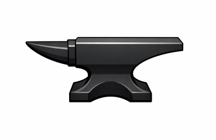
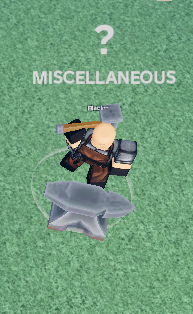
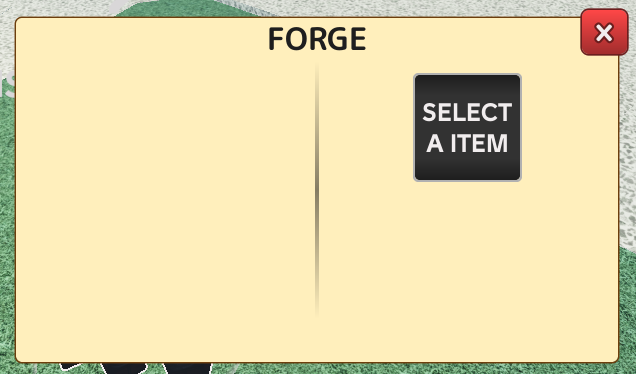

⚒️ BLACKSMITH
Blacksmith
The Blacksmith is an
NPC
who enhances the stats of weapons or accessories.
Specific
Materials
are required to upgrade each piece of equipment.
View Weapon Upgrade Materials
→
🛡 Accessories
View Accessory Upgrade Materials
→

